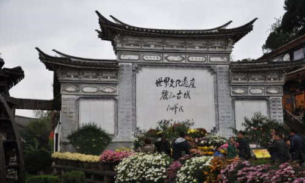

morly旅游圈
中国以整座古城申报世界文化遗产获得成功的两座古城之一，是中国民居中具有鲜明特色和风格的类型之一。 丽江古城在南宋时期初具规模，自明朝时丽江古城称“大研厢”，因其居丽江坝中心，四面青山环绕，一片碧野之间绿水萦回，形似一块碧玉大砚，故而得名。
束河古镇：茶马驿站: 来到丽江，怎能不逛古镇，束河古镇是纳西先民在丽江最早的聚居地之一，也是茶马古道上保存完好的集镇。相比于人声鼎沸的大研古镇，束河古镇则显得安静了许多，当地的居民身着日常的民族服装，百年来还过着质朴的生活。 走过水流入巷的古城，在纳西庭院间用相机采集白墙灰瓦的线条，时间在束河似乎都会慢了一些。游客也可以选择在束河古镇的客栈住宿，这里没有大研古镇彻夜不眠的夜生活，多的是一分逃离喧嚣后的宁静。 束河古镇门票：40元/人，原则上购买门票需要出示丽江的古城维护费80元收据
束河四方街: 束河的四方街和大研古镇的四方街很相似，长宽不过 30米，是丽江坝子最古老的集市之一，古时的四方街也是繁华的集市，每到夜晚，行人们手执灯笼，穿行在青龙河畔，如夏夜流萤，故有“夜市萤火”之说。现在的四方街广场四周均为店铺，古老的木板门面，暗红色油漆，还有店前黑亮的青石，脚下斑驳的石坡路面，以及闲坐的老人，勾勒出束河古朴自然本色。
三眼井: 丽江纳西族的镇子因为有了水，而在高原上显现出与众不同的生活智慧。束河古镇的绕城清流不只是美，在功能性上还颇有门道。在这里一方小池被隔成三份，第一份做为喝的水，第二份做为洗菜用，第三份用来洗衣服。三眼井利用水的流势，由上而下共作了三口井潭，水由最上面的第一口潭一直向下，流到第三口潭后再流走，是丽江地区古老的节水方式的体现。
石莲寺: 石莲寺的历史可以追溯到清朝的光绪年间，虽然寺庙的功能逐渐没落，但从民国初到五四运动后，这里曾是当地居民学习的夜校，因此多了一些书卷韵味，被列入束河八景之一。石莲寺地势较高，来到这里可以俯瞰整个束河古镇灰瓦连绵的美景。 另外，石莲寺北边不远处，步行10分钟就可到达“聚宝山”，也是极佳的摄影和观景点。
交通: 公交：乘坐4、18路至忠义市场下车，步行1公里即到。乘坐公交车2路、13路在古城停车场站下车，或乘坐公交7路在百货大楼下车，可步行由古城北门进入；也可在市区乘坐公交2路、3路、12路在南门街站下车，可步行由古城南门进入
门票: 免费 tips: 黑龙潭公园和白沙壁画需缴古城维护费80元，一般由客栈、酒店等代收，也可在古城大门和各景点售票处购买(游玩玉龙雪山景区、木府、黑龙潭公园等景点，一般都会要求你出示古维费收据)。
开放时间: 全天
内容整理至网络，如有侵权，请联系我们！1255394075@qq.com
